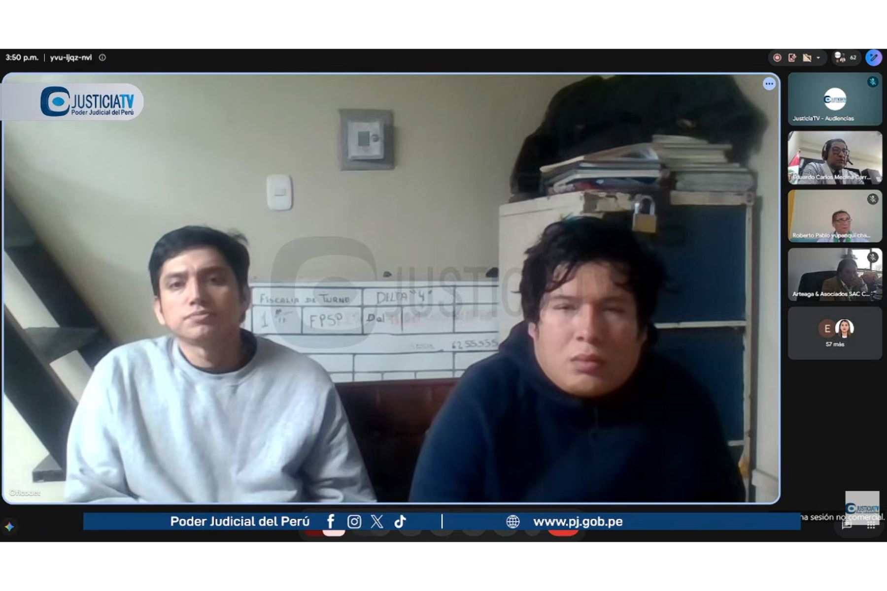

La Junta Nacional de Justicia cesó al juez que dictó prisión preventiva contra la presidenta Keiko Fujimori y los expresidentes Alejandro Toledo y Ollanta Humala. El magistrado calificó la decisión de "ilegal" y anunció que la impugnará.
La Junta Nacional de Justicia (JNJ) de Perú destituyó este viernes al juez Richard Concepción Carhuancho, el magistrado que estuvo a cargo de tutelar las investigaciones del caso Odebrecht y que ordenó la prisión preventiva de la presidenta Keiko Fujimori y de los expresidentes Alejandro Toledo (2001-2006) y Ollanta Humala (2011-2016), entre otras figuras políticas de primer orden. La decisión se adoptó por mayoría en el marco del Procedimiento Disciplinario N.° 027-2026-JNJ, con cuatro votos a favor y uno en contra del consejero Jaime Pedro de la Puente Parodi.
El máximo órgano de la judicatura peruana fundamentó la destitución en una omisión funcional acreditada: el retraso injustificado en la notificación de una resolución de prisión preventiva y en la concesión y elevación del recurso de apelación correspondiente, en perjuicio del abogado Mateo Castañeda Segovia, exabogado de la presidenta Dina Boluarte, en el marco del caso denominado Los Waykis en la Sombra.
Según el informe de instrucción y la ponencia presentada por la presidenta de la JNJ, María Teresa Cabrera Vega, luego de emitirse la decisión de prisión preventiva el 22 de noviembre de 2024, la transcripción del acta fue notificada recién el 4 de diciembre de 2024, es decir, doce días después. Este retraso contravino el numeral 1 del artículo 127 del Código Procesal Penal, que establece que las resoluciones deben notificarse dentro de las veinticuatro horas de haber sido dictadas, lo que configura un "retraso judicial injustificado".
Un segundo retraso se relaciona con los recursos de apelación, que fueron concedidos y elevados al órgano superior recién el 16 de diciembre de 2024, también doce días después, a pesar de que el artículo 278 del Código Procesal Penal establece que, al tratarse de prisión preventiva, el juez de investigación preparatoria debe elevar los actuados dentro de las veinticuatro horas bajo responsabilidad.
La actuación disciplinaria se inició de oficio luego de que el Tribunal Constitucional remitiera a la JNJ la Sentencia 21/2026, que declaró fundada una demanda de habeas corpus por vulneración de los derechos a la pluralidad de instancia y de defensa de Mateo Castañeda Segovia. El alto tribunal concluyó que la demora afectó los derechos fundamentales del justiciable, y posteriormente la Quinta Sala Penal de Apelaciones Nacional revocó la prisión preventiva y dispuso su libertad.

La ponencia rechazó los argumentos de la defensa del magistrado sobre la alta carga procesal en los juzgados de investigación preparatoria. "Como juez tenía un deber propio de diligencia y vigilancia que no podía delegar", sostuvo la presidenta de la JNJ durante la sesión del Pleno. El colegiado también desestimó las explicaciones vinculadas con la complejidad del proceso y la intervención del especialista de audiencia en la elaboración de la transcripción, al considerar que no justificaban suficientemente el tiempo transcurrido.
El Pleno determinó que la conducta acreditada constituye la falta muy grave prevista en el numeral 12 del artículo 48 de la Ley N.° 29277, Ley de la Carrera Judicial, referida a actos u omisiones que, sin constituir delito, comprometen gravemente los deberes del cargo al vulnerarse los deberes funcionales establecidos en los numerales 1, 6 y 18 del artículo 34 de la misma norma.
Concepción Carhuancho, uno de los magistrados más conocidos del país, estuvo a cargo desde 2015 del Primer Juzgado de Investigación Preparatoria y en los últimos años recibió fuertes críticas de los procesados que pasaron por sus manos. A petición de la Fiscalía, ordenó en 2017 el envío a prisión preventiva de los expresidentes Toledo y Humala. Toledo, extraditado desde Estados Unidos en 2022, fue posteriormente condenado por recibir sobornos de la constructora brasileña Odebrecht. Humala pasó diez meses en prisión preventiva, al igual que su esposa Nadine Heredia, mientras su partido era incluido en la investigación y sus cuentas bancarias congeladas.
El caso contra Humala por supuesto lavado de dinero en la financiación irregular de sus campañas electorales derivó en una condena de 15 años de cárcel que recientemente fue anulada por el Tribunal Constitucional, al determinar que la acusación de la Fiscalía carecía de sustento porque, en el momento de los hechos, no era delito ocultar donaciones en las cuentas del partido político.
Algo similar ocurrió con Keiko Fujimori, a quien Concepción Carhuancho ordenó en 2018 detener y luego enviar por un periodo de tres años a prisión preventiva por un caso de similar índole al de Humala. La actual mandataria estuvo en prisión preventiva en dos periodos distintos que sumaron cerca de año y medio antes de salir libre y verse beneficiada por el Tribunal Constitucional.

Tras conocer la decisión, Concepción Carhuancho criticó duramente a la JNJ en declaraciones a RPP. "Yo considero que esa resolución de destitución que se me ha impuesto es ilegal porque se ha afectado el debido proceso, concretamente el ne bis in idem. Por ese mismo hecho, yo ya he sido investigado por la Autoridad Nacional de Control del Poder Judicial. Incluso en dos instancias rechazó preliminarmente la queja propuesta por el abogado de Castañeda Segovia en mi contra, pero a pesar de haber adquirido la calidad de cosa decidida, la Junta Nacional de Justicia ha reabierto ese caso y me ha impuesto la sanción de destitución", indicó el magistrado destituido.
El magistrado explicó que el ne bis in idem es una regla legal que significa "no dos veces por la misma cosa" y prohíbe que una persona sea juzgada, investigada o castigada dos veces por un mismo hecho. Según su versión, la JNJ estaría incurriendo en esa vulneración al reabrir un caso que ya había sido resuelto en su favor en dos instancias administrativas. Concepción Carhuancho anunció que evalúa acudir al Poder Judicial para impugnar la sentencia de destitución.
El caso ha generado reacciones encontradas en el ámbito político y judicial peruano. Mientras algunos sectores celebraron la decisión como un acto de justicia y un mensaje contra la impunidad procesal, otros la interpretaron como una represalia vinculada al contexto político, en un momento en que Keiko Fujimori ocupa la jefatura del Estado tras tres intentos fallidos. La excongresista Indira Huilca cuestionó la suspensión previa del magistrado y atribuyó la medida a una "pura venganza" de la lideresa de Fuerza Popular, afirmando que "la mafia aprovecha el proceso electoral para seguir operando".
La destitución de Concepción Carhuancho marca un hito en la historia judicial reciente del Perú. Se trata del primer juez que envió a prisión preventiva a una candidata presidencial que luego llegó al poder, y su salida del sistema anticorrupción ocurre en un momento de alta tensión institucional. La JNJ, organismo constitucional autónomo encargado de la selección, ratificación y sanción de jueces y fiscales, ha quedado en el centro del debate sobre la independencia judicial en el país.
El abogado Mateo Castañeda, cuyo caso de prisión preventiva fue el detonante del proceso disciplinario, fue liberado después de que la Quinta Sala Penal de Apelaciones Nacional revocara la medida. La demora en la notificación y en la tramitación de su apelación, según el Tribunal Constitucional, vulneró sus derechos a la pluralidad de instancia y de defensa, un fallo que la JNJ utilizó como base para iniciar de oficio la investigación contra el magistrado.
Concepción Carhuancho también enfrenta una demanda civil del diputado Pier Figari, quien le exige 2 millones de soles por indemnización tras el archivo de su proceso, lo que suma más presión sobre su situación legal y patrimonial.
La destitución implica la separación definitiva del magistrado del Poder Judicial, aunque su defensa ha anunciado que agotará todas las instancias legales para revertirla. El caso pone de relieve la tensión entre la celeridad procesal exigida por la ley y las condiciones reales de los juzgados de investigación preparatoria, que manejan volúmenes de expedientes que, según los propios magistrados, desbordan su capacidad operativa. Para la JNJ, sin embargo, el exceso de carga no justifica la falta de celeridad en procesos con reos en cárcel, un criterio que el Tribunal Constitucional respaldó al calificar la demora como "retraso judicial injustificado".
La salida de Concepción Carhuancho deja un vacío en el sistema de justicia penal especializado y abre un nuevo capítulo de incertidumbre sobre el futuro de las investigaciones de alto perfil que estuvieron bajo su tutela. Su legado, marcado por las prisiones preventivas de Keiko Fujimori, Alejandro Toledo y Ollanta Humala, queda ahora bajo el escrutinio de la historia judicial peruana, mientras el magistrado promete dar la batalla legal "hasta el último recurso".